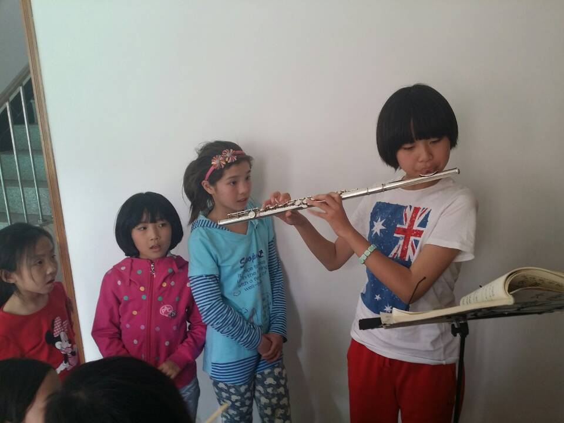

出品：湾湾 大伟
审核：大伟
制片：湾湾
演 员 表：
领衔主演：
1 赵 伟 ········· 胖伟 317 北京军区少将
2 张春斌 ·······厚道人 317 南京军区军区司令/副总指挥/上将
3 吕书武 ········· 武 317 南京军区/军区政委 /上将
4 齐海峰 ········· 可乐 317 华东军区/少将
5 刘 军 ········· 刘军 317 华东军区 上校
6 黎建伟 ······ 大伟（Dvaee） 317 华南军区/军区司令/上将
7 李智晖 ········· 李智晖 317 北京 北京军区 军区司令/少将
8 蔡斌 ········· 317
9 顾桂生 ········· 顾桂生 317 南京军区 上校
10 陈滔 ········· 340 北京军区
11 胡晓艳 ········· 红黄蓝胡晓燕 340 中原军区 军区政委/中将
12 林嵘 ········· 南京军区 中校
13 杨杰 ········· 杨杰 318 江苏 南京军区 少将 无锡
14 周健 ········· zhoujian_(Jack) 318 上海 南京军区 少将
15 李圣慈 ········· 318 东北军区
16 严旭 ········· 旭 318 华东军区 军区司令
17 张彦清 ········· 美丽的白沙河 318 中原军区 军区司令/上将
18 谢伟 ········· 318 南京军区
19 赵师谊 ········· 一如 华东军区 中校
20 吕显斌 ········· 小飞侠 318 北京军区 少将
21 岳国盛 ········· 318 东北军区
22 张滔 ········· 张滔 310 江苏 南京军区/少将
23 张文 ········· 340 华南军区
24 王梦华 ··· 梦话王 340 北京军区 总后勤部长 总指挥 上将
25 高清森 ········· sam 319 华南军区 少将
26 袁标 ········· 袁标 319 南京军区 中校
27 陈鹄 ········· 陈鹄 319 华东军区 少将
28 王坚志 ········· 蓝天之玉王坚志 319 南京军区/中校
29 徐猛 ········· pvg 319 华东军区 少将
30 周立峰 ········· Larry Zhou 319 华南军区 少将
31 彭宏文 ········· 彭彭319 319 张家港 南京军区 /少将
32 王盈 ········· wy 319 华南军区 上校
33 罗洁才 ········· 罗洁才 319 华南军区 中校
34 滕勇进 ········· TYJ 310 江苏 南京军区 少将 南京
35 苏梅 ········· Mei Houston 340 华南军区 少将
36 昝慧莹 ········· 洋 340 华东军区 军区政委 组员 中将
37 刘英华 ········· 延华 321 天津 北京军区 少将 河西 南
38 吴光明 ········· 东太湖 321 华东军区 少将
39 余志刚 ········· yuzhgang 321 南京 南京军区 上校
40 霍永学 ········· 湾湾 321 北京军区 军区政委/少将
41 侯立江 ········· 侯立江 321 山东 南京军区 上校
42 徐伟 ········· 徐伟 321 南京军区 总参谋长 秘书长 中将
43 谭正雄 ········· 谭正雄 321 华南军区 少将
44 叶正杰 ········· 华仔 男 321 华东军区 少将
45 秦银涛 ········· 八月桂花猪 321 江苏 南京军区 中校
46 王明霞 ········· 王明霞 340 西北军区 中校
47 刘慧 ········· 刘慧 340 西南军区 军区司令/中将
48 谢靓 ········· 沉香 340 华东军区 少将
主演： 胖伟，大伟
声音剪辑：湾湾
音乐：
S01-LOGO1 - 81, To Alice (SLOW)
S02-Title - It is you (I have loved)
S03-Ocean - Love Concerto
S04-Prologue - Most amazing national flavor
S05-Particles - La Vie En Rose - part1
S06-Map - Croatian Rhapsody
S07-Photos - La Vie En Rose - part2
S08-Video-replay - Misc
S09-Casting/Staff - 渔舟唱晚/It is you (I have loved)
S10-Racing - Tetsujin/Cool Chili/愉快的旅行 - 朱明瑛
S11-Football - 友谊地久天长



Every end is a new beginning
The secret to a rich life is to have more beginnings than endings.